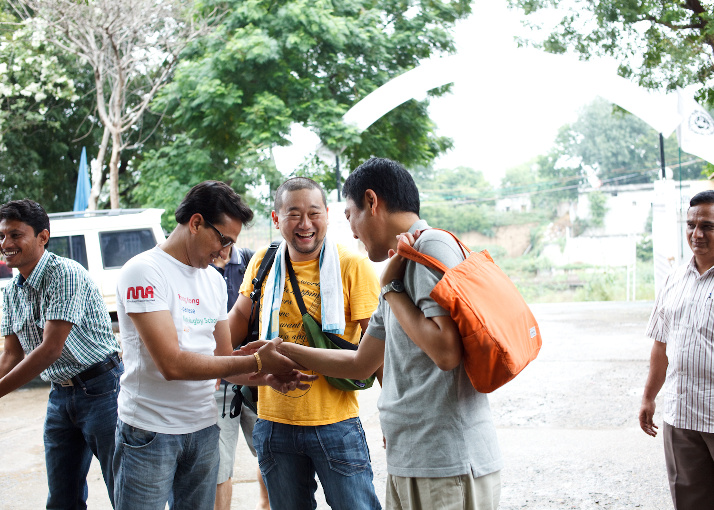
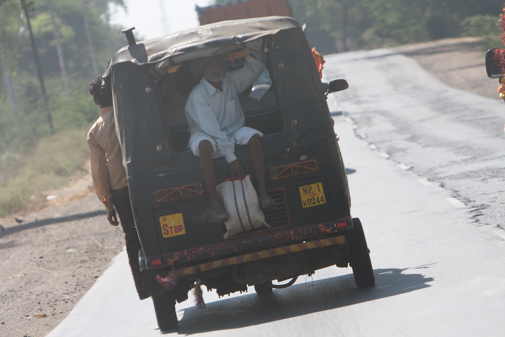
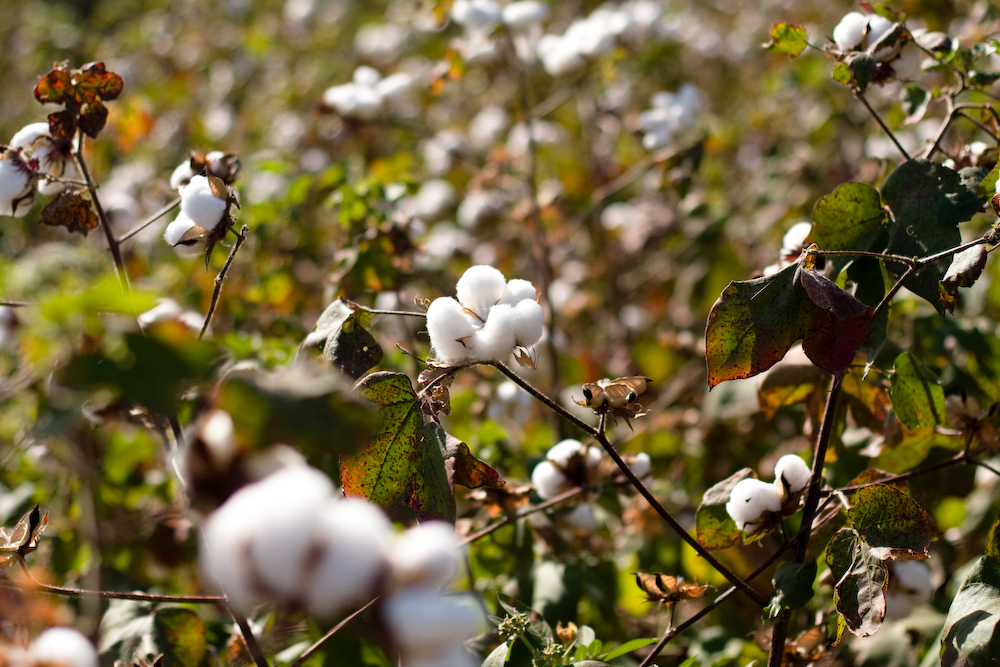

プレオーガニックコットン（POC）とは？
WHAT'S PREORGANIC COTTON
プレオーガニックコットンとは、オーガニックコットンの認定までに必要な３年間の無農薬栽培期間に育てられたコットンのことです。プレオーガニックコットンの購入を通じて、インドのコットン生産者のオーガニック農法への転換を支援することができます。生産者がオーガニック農法に転換していくことで、生産者の労働環境や生活環境の改善、そして土壌汚染や地球温暖化などの地球環境の改善につながっていきます。私たちコットンを着る消費者がプレオーガニックコットンを選ぶことで、生産者のより良い生活と環境をより良くしていくことができます。
詳しく見る


なぜオーガニックコットン？
APPROARCH
わたしたちのアプローチの説明が2行ほど入ります。わたしたちのアプローチの説明が2行ほど入ります。
なぜPOC？
WHY POC
POCの説明が2行ほど入ります。POCの説明が2行ほど入ります。POCの説明が2行ほど入ります。